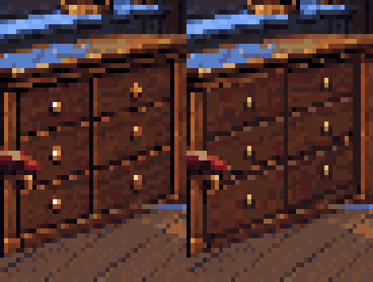
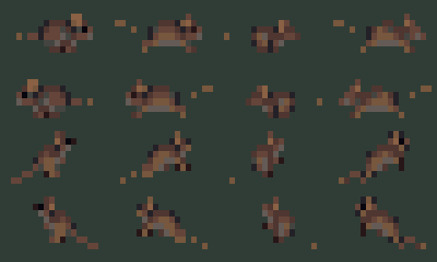
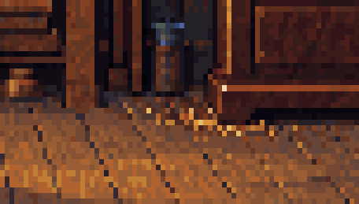

Corrected drawers beneath the window, light rain behind the glass, a wavering lamp, a restrained pendulum swing, and an occasional mouse. Holmes retains the approved reference and idle poses.
The mouse waits 18–35 seconds between appearances; “Show mouse” lets you inspect each route now. Pendulum motion is a requested art preview: the story's stopped-clock rule still needs an integration decision. Hands and dial remain fixed.
Both columns and all three rows share the same plane. The original wood texture is reprojected, and each knob is placed on that plane. The foreground desk is unchanged.
Vanishing-point drawing · Layered cabinet correction
Clock route close-up:

Workflow and reproducible sources · Timing, masks and routes · Idle pose review